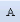
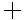
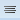

Adding Text Elements, Labels and Tooltips to a Graphic
The text element allows you to display a text or number label on a graphic and specify text formatting properties such as font family, size, and horizontal alignment, etc., and numerical formatting such as engineering units to display along with the values, Min, Max, and Precision properties.
Select the topic related to your task:
Add a Data Point Text Reference
You can create text labels to view a data points Description, Name, or Alias on the graphic in Runtime mode.
- System Manager is in Engineering mode.
- On the Home tab, from the Elements group, click Text

. - The mouse pointer changes to crosshair

when you move across the canvas. - Click the canvas and drag the crosshair to draw a text box.
- When you release the mouse button, a text box is created, the word Text is displayed in the text box.
- In the Properties View, navigate to the Text group, and from the Text Type drop-down menu, select one of the following to display in the text label for the associated data points references:
- Short Reference - Displays the Name\Description, depending on the System Browser selection.
- Long Reference - Displays the entire path of the data point reference.
- Alias - Displays the text, if any, from the Alias field of the data point reference.
- From the Evaluation Editor > Property drop-down menu, select Text.
- In System Browser, navigate to the data point object you want to reference in the text label, and then drag the data point over the Expression field in the Evaluation Editor.
- In the Expression field, type a double-quote (") at the beginning of the path, and then at the end of the path.
- Click Save
 .
.
- When you are in Test or Runtime mode, the text reference displays according to the selection you made in the Text Type field.
Create a Translated Text Label
You can create translated text labels that display a specific text from a text group table, in the language of the current user’s software settings.
- You are in the Graphics Editor and have a graphic or blank canvas open.
- In System Browser, select Management View.
- Select Project > System Settings > Libraries.
- Select the library folder that has the text group with the text you want to reference and display on the graphic.
- Click the text group and drag the text group object onto your canvas.
- A translated text element is created on the graphic.
- Double-click the translated text element, and from the drop-down menu select the text you want to display.
- The language-specific text displays according to the current language settings of the software. The Properties View Text Properties> Text and >Text Type are updated to reflect the reference to the text group object.
NOTE: You can also reference the text group manually by typing the text group object name and the text value (TextGroupObjectName.TextValue) into the Text Properties > Text field, and from the Text Properties > Text Type drop-down menu, selecting Translated Text.
Draw a Text Element
- You are in Design or Test mode and have a graphic open.
- On the Home tab, from the Elements group, click Text .
- The mouse pointer changes to crosshair when you move across the canvas.
- Click the canvas and drag the crosshair to draw a text box.
- When you release the mouse button, a text box is created, the word Text is displayed and highlighted in the text box.
- Double-click the text element and type the desired text.
- In the Properties view changes to Text Properties view, and the Text field automatically displays the text as it is typed on the canvas.
- With the text element still selected on the canvas, adjust the Text element properties as necessary.
- To create another text element, do one of the following:
- With the element you just drew selected, from the Elements group, select the Text element or a different element to draw. When you draw the new element, shared properties are retained from the selected element and applied to the new primitive element.
- Click anywhere on the canvas so that the previous element is no longer selected, and then select another primitive element to draw.
Edit a Text Element
- You are in Design or Test mode and have a graphic open that contains a text element you want to edit.
- Do one of the following:
- To modify the text on the canvas, double-click the text element and modify the text as needed.
- To modify the text properties in the Properties View, with the text element that you want to edit selected from either the canvas or the Element Tree view, navigate to the Properties view (Text Properties) and edit the associated text element properties as needed.
- Click Save
 .
. - The graphic is saved with the modified text element settings.
Format a Text Element Using the Format Group
- You are in Test or Design mode, and have a graphic containing one or more text elements.
- Click the text or text elements you want to apply the formatting to.
- The selected elements are active on the canvas.
- On the Home tab, from the Format group, select a font from the Font Family drop-down menu, and select the size from the Font Size drop-down menu.
- The font family and style are applied to the text elements.
- (Optional) Apply one or more formatting options to the text by clicking on each of the following formats needed: Bold, Italic, Underline, or Strikethrough.
- The selected formatting is applied to the text elements.
- (Optional) Select the appropriate alignment of your text, the text element.
- Horizontal Alignment - Select a horizontal placement of the text within the bounding rectangle. Options are: Left , Center , Right , or Justified .
- Vertical Alignment – Select a vertical placement of the text within the bounding rectangle. Options are: Top , Center , or Bottom

.
- The text elements are aligned within the bounding rectangles.
Resize Text Element Fonts Automatically
- You are in Design or Test mode, and have a graphic containing one or more text elements. You would like the text size to update relative to the bounding rectangle. This means, when you shrink or expand the element, the text will adjust according to size and display.
- From the Home tab, the Format group, click Resize Font .
- The icon background color turns orange.
- The text font size increases and decreases relative to the text element’s bounding rectangle.
Set the Tooltip Property
- You are in Design or Test mode, and have elements on the active canvas you want to add tooltips to.
- In the Properties view, navigate to the General category and enter the desired tooltip text into the Tooltip property field.
- When you are in Runtime mode and move the mouse over the element, the tooltip now displays with a yellow background.
Related Topics
For background information, see the following:
- Element and Graphic Properties.
- Element Types.
For workspace overview, see Home Tab.
For keyboard shortcuts, see Keyboard Shortcuts.